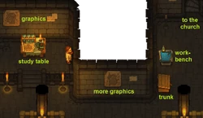
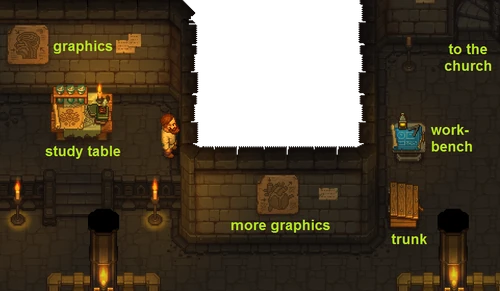
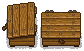
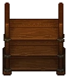
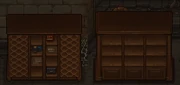
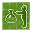

Alchemy Lab
| Alchemy Lab | |
|---|---|
 | |
Location information
| |
Buildable
|
True |
Exits
|
Morgue, Church, Cellar, Dungeon |

The alchemy lab is located in the basement of the church. This is where you craft prayers, books, and alchemy equipment.
See alchemy and sermons for more information.
Location

The alchemy lab is quite a vast area of multiple rooms below the church, consisting of several logically unconnected areas, which allow workstation placement.
The picture shows the northern part with the initial furnishing, with (from left to right) some graphics on the walls, the study table, more graphics, a trunk and the workbench to build all the other stations, as well as the staircase leading up into the church.
Further south is more room for building, and then a corridor, allowing access to the morgue. To the east a corridor leads, if you turn the first corridor north, through the sacrifice zone into the dungeon, or, if you take the second corridor north, to the cellar and up to your home. If you keep going east, the corridor leads onwards to the trade office and village.
To be able to use those corridors, you have to clear out the rubble there first.
Trunk

The laboratory comes already furnished with one trunk, that even contains a few of alchemical components. It is not possible to build an additional one, but you may build alchemy racks, bookshelves or scrollshelves to store your stuff.
Study Table
The alchemy laboratory starts out with a study table already installed (though the initial location is not ideal). Most items in the game can be studied for a large number of red, green, or blue tech points. Each type of item can be studied only once.
The  circumspect effect from eating a
circumspect effect from eating a
cake or a
grape pie can be used to increase the yield by adding  1 to the gain from studying each item.
1 to the gain from studying each item.
The study table requires both
Faith and
Science to operate. Faith can be obtained by holding a sermon in the church, from confessionals, or from operating the buffet tent. Science can be obtained from decomposing
clean paper,
notes,
chapters or  Books and
Books and
Lens in the study table.
After studying an object, its description might say it is decomposable into a solution, powder, or extract. This refers to the alchemy apparatus that needs to be used to process it.
| Icon | Description | Ingredients | Technology | Size |
|---|---|---|---|---|
| Used to study the world around you. | 6× Wooden plank 4× Simple iron parts 3× Conical flasks |
Available from the beginning | 5x4 (preplaced)
4x4 (built by player) |
Alchemy Workbench (Tier I)
See the alchemy workbench (tier I) page for a list of known crafting recipes.
| Icon | Description | Ingredients | Technology | Size |
|---|---|---|---|---|

|
Used to mix potions using two ingredients. | 6× Wooden plank 3× Complex iron parts 2× Advanced conical flasks |
The Beginning of Alchemy | 5x4 |
Alchemy Workbench (Tier II)
See the alchemy workbench (tier II) page for a list of known crafting recipes.
| Icon | Description | Ingredients | Technology | Size |
|---|---|---|---|---|
| Used to mix potions using three ingredients. | 6× Jointing 2× Steel parts 3× Advanced conical flasks |
Advanced Alchemy | 5x4 |
Hand Mixer
A hand mixer decomposes suitable materials into solutions for use in alchemy. To be used with the hand mixer a material must first be studied at the study table and have a solution as a decomposition product.
| Icon | Description | Ingredients | Technology | Size |
|---|---|---|---|---|
| Used to mix things into solutions. | 6× Wooden plank 4× Simple iron parts 8× Nails |
The Beginning of Alchemy | 6x3 |
Alchemy Mill
An alchemy mill decomposes suitable materials into powders for use in alchemy. To be used with the alchemy mill a material must first be studied at the study table and have a powder as a decomposition product.
| Icon | Description | Ingredients | Technology | Size |
|---|---|---|---|---|
| Used to grind things into powders. | 2× A polished brick of stone 6× Wooden plank 4× Simple iron parts |
The Beginning of Alchemy | 6x4 |
Distillation Cube
A distillation cube decomposes suitable materials into extracts for use in alchemy. To be used with the distillation cube, a material must first be studied at the study table and have an extract as a decomposition product. Unlike the hand mixer or alchemy mill, processing an extract proceeds automatically, but only one batch at a time.
| Icon | Description | Ingredients | Technology | Size |
|---|---|---|---|---|
| Distills the extracts of things. | 20× A piece of stone 8× Complex iron parts |
Advanced Alchemy | 4x3 |
Distillation Cube II
A distillation cube II decomposes suitable materials into extracts for use in alchemy. To be used with the distillation cube II, a material must first be studied at the study table and have an extract as a decomposition product. Using the distillation cube II yields more material than tier I and is considerably faster. Unlike the hand mixer or alchemy mill, processing an extract proceeds automatically, but only one batch at a time.
| Icon | Description | Ingredients | Technology | Size |
|---|---|---|---|---|

|
Distills the extracts of things. | 30× A piece of stone 4× Complex iron parts 4× Steel parts |
Distillate | 4x3 |
Church Workbench
A church workbench is used to make many different products. These include fertilizer, paper glop, ink and pen and ink, paper (pigskin and clean paper), books (softcover and hardcover), rope, candles, incense, and embalming injections.
| Icon | Description | Materials Required | Technology | Size |
|---|---|---|---|---|
| Used to make various church related products . | 9× Flitch 10× Nails 4× Complex iron parts |
Embalming Liquids Paper Crafting |
5x3 |
Alchemy Rack

The alchemy rack is an alchemy-themed decorative storage structure.
Like other decorative storage, it changes appearance as it gets more full.
| Icon | Description | Ingredients | Technology | Size |
|---|---|---|---|---|
| Decorative storage for 25 items. | 12× Flitch 10× Nails 4× Wooden beam |
Alchemy Storage | 4x2 |
Desk
A desk is used to write various kinds of things.
| Icon | Description | Ingredients | Technology | Size |
|---|---|---|---|---|
| A place to write.
(notes, chapters, books, flyers, stories, and sermons). |
8× Flitch 8× Nails |
Writing | 4x3 |
Desk II
A desk II is used to write various kinds of things. It is claimed to take less energy, and produce higher quality results.
| Icon | Description | Ingredients | Technology | Size |
|---|---|---|---|---|

|
A better place to write.
(notes, chapters, books, flyers, stories, and sermons). |
6× Wooden plank 12× Nails 1× Lens |
Writer's Inspiration | 4x3 |
Scrollshelf


The scrollshelf (left) and bookshelf (right).
| Icon | Description | Ingredients | Technology | Size |
|---|---|---|---|---|
| General storage chest for up to 25 items. | 8× Flitch 4× Simple iron parts 12× Nails |
Writing Supplies | 6x2 |
Bookshelf
| Icon | Description | Ingredients | Technology | Size |
|---|---|---|---|---|
| General storage chest for up to 25 items. | 8× Flitch 4× Simple iron parts 12× Nails |
Writer's Inspiration | 6x3 |
Printing Press
A printing press is used to make flyers.
| Icon | Description | Ingredients | Technology | Size |
|---|---|---|---|---|
| Used to print the same thing many times. | 6× Wooden plank 4× Simple iron parts 12× Nails |
Simple printing press | 4x5 |
Printing Press II
A printing press II is used to make flyers. It is claimed to take less energy or time.
| Icon | Description | Ingredients | Technology | Size |
|---|---|---|---|---|
| Used to print the same thing many times and better than before. |
10× Wooden plank 4× Complex iron parts 18× Nails |
Complex printing press | 4x5 |
Random Text Generator
A random text generator is used by  zombies to make
zombies to make
techbooks and 
story.
| Icon | Description | Ingredients | Technology | Size |
|---|---|---|---|---|
| Used by zombies to write. | 4× Wooden plank 2× Complex iron parts 1× Pen and ink |
Random text generator | 2x3 |
Zombie Alchemy Decomposer
A zombie alchemy decomposer is used by  zombies to produce alchemical ingredients.
zombies to produce alchemical ingredients.
| Icon | Description | Ingredients | Technology | Size |
|---|---|---|---|---|
| Used by zombies to produce alchemical ingredients. |
2× A polished brick of stone 10× Wooden plank 6× Simple iron parts |
Zombie alchemy workbench | 7x5 |
Zombie Alchemy Workbench
A zombie alchemy workbench is used by  zombies to produce alchemical elixirs.
zombies to produce alchemical elixirs.
| Icon | Description | Ingredients | Technology | Size |
|---|---|---|---|---|
 |
Used by zombies to produce alchemical elixirs. |
10× Wooden plank 6× Simple iron parts 4× Conical flasks |
Zombie alchemy workbench | 6x3 |
| ||||||||
| |||||